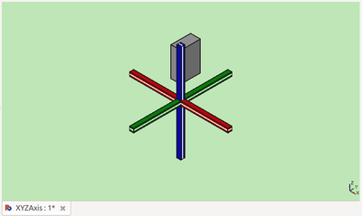

|
| Расположение в меню |
|---|
| Деталь -> Зеркальное отражение... |
| Верстаки |
| Part, Complete |
| Быстрые клавиши |
| отсутствуют |
| См. также |
Introduction
'Mirror Object' - This tool creates a new object (image) which is a reflection of the original object (source). The image object is created behind a mirror plane. The mirror plane may be standard plane (XY, YZ, or XZ), or any plane parallel to a standard plane.
Пример:

{kind=link}
Перед

После (Отражено по плоскости YZ)
Usage

Select the source object from the list. Select a standard Mirror plane from the dropbox. Press OK to create the image object.
Options
The Base point boxes can be used to move the mirror plane parallel to the selected standard miror plane. Only one of the X, Y, or Z boxes is effective for a given standard plane.
| Standard Plane | Base Point Box | Effect |
|---|---|---|
| XY | Z | Move mirror plane along Z axis. |
| XY | X, Y | No effect. |
| XZ | Y | Move mirror plane along Y axis. |
| XZ | X, Z | No effect. |
| YZ | X | Move mirror plane along X axis. |
| YZ | Y, Z | No effect. |
Limitations
- Arbitrary mirror planes (ie not parallel to a standard plane) are not supported (as of FC version 0.13).